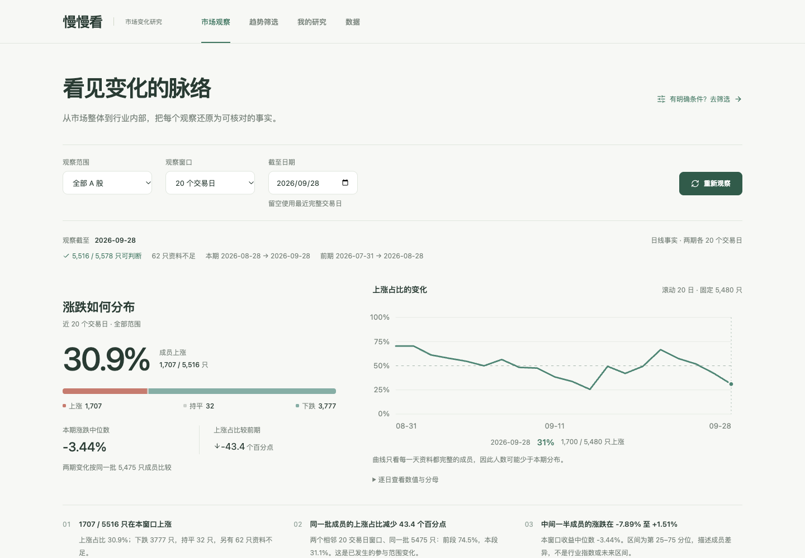

先看整体发生了什么
上涨成员有多少？涨跌集中在哪些区间？用广度轨迹和收益分布，让分散的日线变成看得见的群体变化。
市场分布 / 固定成员轨迹
涨跌不只有一个数字。
把整个市场拆开，看看变化在哪里发生、
又有多少成员一起经历。
A 股 · 本机运行 · 无需慢慢看账号 · 开源

上涨成员有多少？涨跌集中在哪些区间？用广度轨迹和收益分布，让分散的日线变成看得见的群体变化。
市场分布 / 固定成员轨迹行业的中位涨跌、上涨占比和分散程度放在一起。比较相邻两个等长窗口，分清两期上涨、前跌后涨与资料不足。
行业剖面 / 两期变化点击分布或变化分组，查看组成它的成员与逐日价格。把现象和自己的想法记下来，下一次用同一批成员复看；有明确条件时，再研究历史。
成员下钻 / 观察笔记 / 同范围复看当前分布、两期对照和历史轨迹各自展示可判断的成员数量。缺行情单列，不填零；已有旧数据明确标日期，不冒充最新。
中位数是成员的统计事实，不是行业指数。界面不会把一个筛选命中自动变成推荐，也不会用隐藏评分替你判断。
查看完整定义与边界 ↗需要 Python 3.11+。先安装，再连接自己的数据源并更新行情。
kan web
浏览器打开本机界面。主线版本可从“数据”页核对来源、更新行情，再回到“市场观察”。
官网介绍主线开发功能；上方命令安装已发布稳定包。体验尚未发行的功能，请按 README 的 Git 主线安装说明选择来源。
日常用 Web 看分布与图证；终端、Python 和 MCP 直接复用同一计算；MCP 的 kan_discover 提供相同观察结果。
kan discover --window 20市场与行业的分布和两期变化kan tui键盘操作的趋势研究kan trend --help表达明确的走势条件kan study --help配置并核对历史样本kan mcp install连接支持 MCP 的客户端
使用你配置的数据源与本地行情缓存。数据源权限、覆盖和可用性会影响结果，界面保留来源、截止日和缺口。具体设置以快速开始文档为准。
自选、持仓、笔记、筛选与研究记录保存在本机。获取行情时只向所选来源发送必要代码及该来源凭据；持仓成本、股数和现金不发送给行情源。
可以。趋势筛选保留连续涨跌、阳阴线、前后连续段、波段结构、多周期位置与形态检索。明确条件后执行，保存筛选仅保存条件，研究历史需要单独明确运行。
它们是已经发生的价格与群体结构变化。当前上市范围和行业归属用于回溯，不代表历史时点完整市场；历史价格不预示未来，不提供买卖建议、目标价或收益承诺。